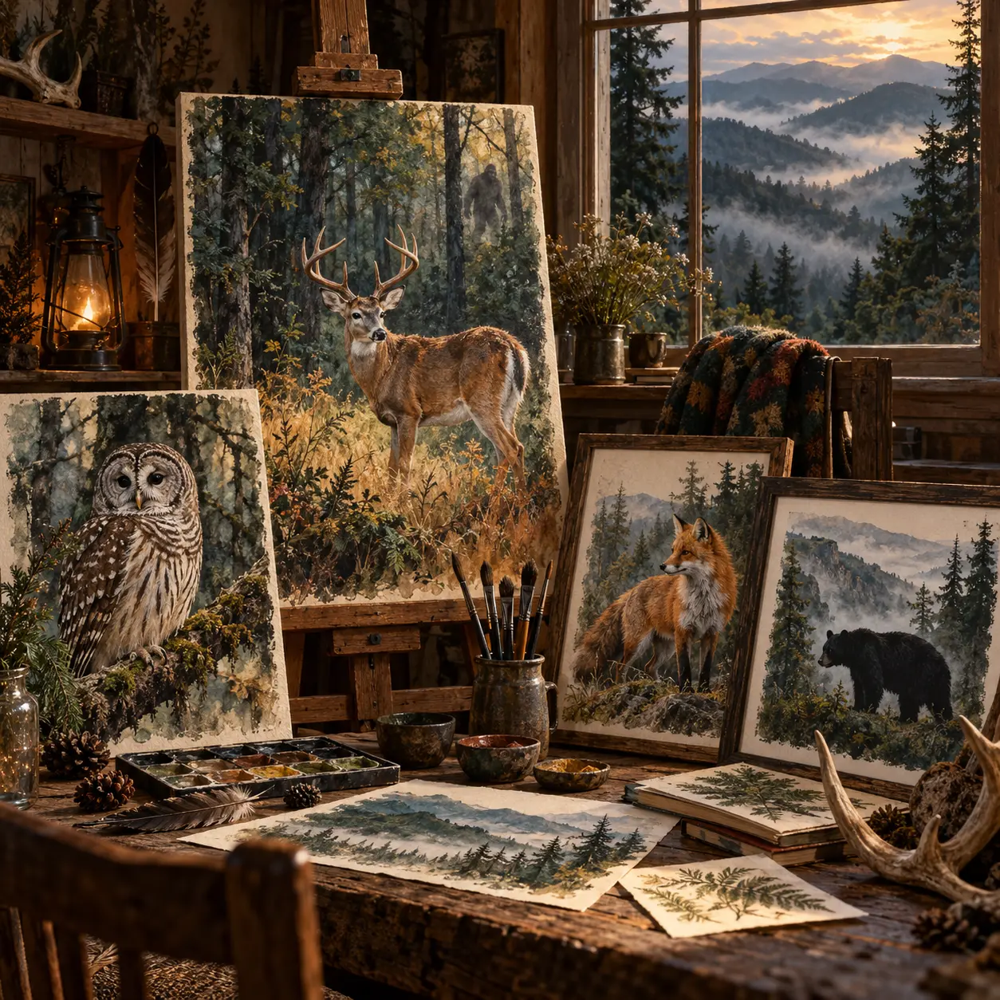

Wild Visitors Series
Deer, foxes, owls, bears, and other familiar faces inspired by WVLRP sightings.
GALLERY OPENING SOON
Original wildlife, mountain, and camera-inspired artwork with a little mystery hiding in the trees.
Deer, foxes, owls, bears, and other familiar faces inspired by WVLRP sightings.
GALLERY OPENING SOONMountain light, deep hollows, old timber, and the weather that changes everything.
ORIGINALS & PRINTS PLANNEDWoodland scenes for sharp eyes—every piece keeps one small secret.
SOMETHING IS WATCHING